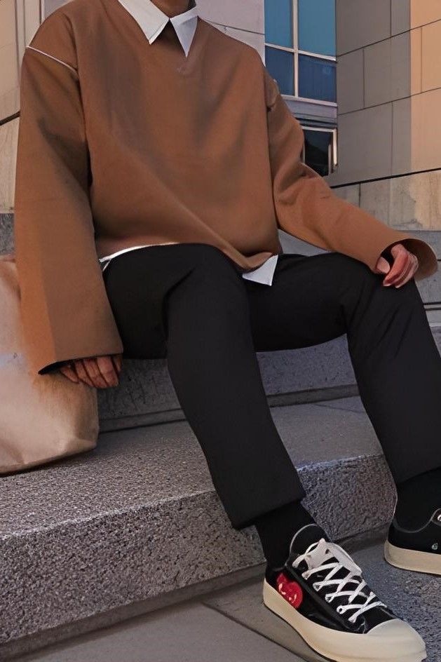
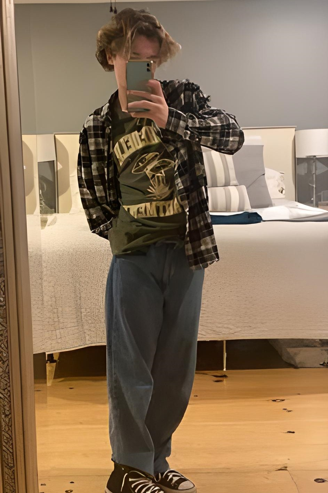

El estilo preppy es uno de los tipos de moda para jóvenes que se aleja del modelo tradicional y busca reinventar los uniformes de colegio. El nombre de este estilo proviene de los jóvenes de la clase alta americana que, antes de ingresar a las universidades más prestigiosas del país, deben asistir a unos cursos previos llamados preparatory courses.
La moda preppy se caracteriza por ser atrevida y divertida, pero sin llegar a perder la elegancia. En este estilo abundan los colores pasteles, los estampados a cuadros y los bordados. A continuación, te daremos algunos tips para llevar el estilo de moda preppy a la perfección: